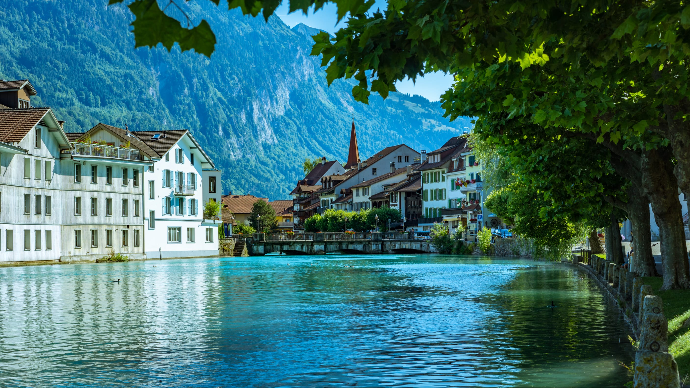
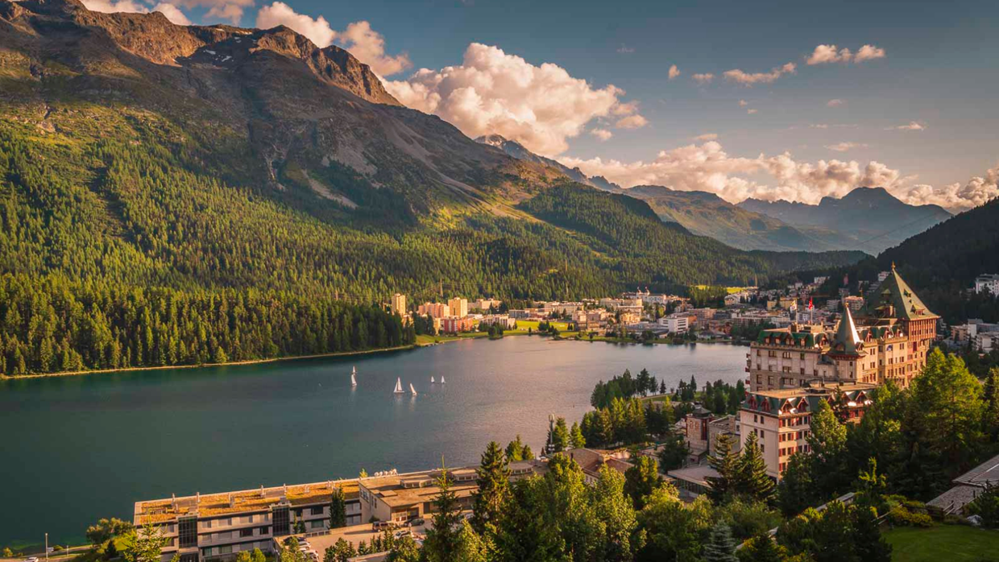
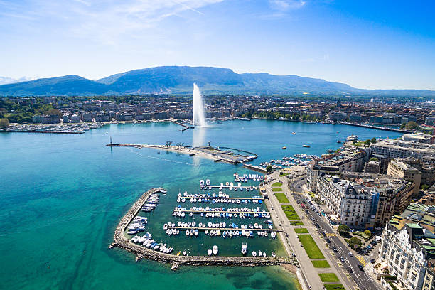

SWITZERLAND
SWITZERLAND
Interlaken

"Interlaken is nature’s invitation to pause, breathe, and feel alive."
Zurich
"Zurich doesn’t shout — it whispers luxury in every detail."
Lauterbrunnen Valley

"In Lauterbrunnen, every waterfall feels like nature whispering a secret."
St. Moritz

"Where the snow glitters more than the jewelry."
Lake Geneva

"Some lakes reflect mountains — Lake Geneva reflects the soul."